Chapter 2 The Open Science Framework
In this chapter, we introduce the Open Science Framework (OSF), an open-source project that enhances open collaboration in scientific research.
2.1 OSF Introduction
The OSF is a free, open-source web application that connects and supports the research workflow, enabling scientists to increase the efficiency and effectiveness of their research (Elliott et al., 2021). Researchers can use OSF to collaborate, document, archive, share, and register research projects, materials, and data.
Although the OSF was initially used to work on a project in the reproducibility of psychology research, it has subsequently become multidisciplinary (from Wikipedia https://en.wikipedia.org/wiki/Center_for_Open_Science). The OSF can help us during any part of the research lifecycle (Elliott et al., 2021):
- Store research materials. The OSF allows us to store all research materials in a manageable, secure cloud environment. The OSF ensures we and our colleagues can access materials, when needed, reducing the likelihood of losing study materials.
- Collaborate with colleagues. With the OSF, our work is preserved and easily accessible to only those people that should have access. By sharing materials via OSF, we ensure that everyone is working with the correct, up-to-date file versions and we never lose files again.
- Cite research materials. The OSF can be used to share manuscripts, unpublished findings, materials, and in-progress work. The OSF makes all of it citable so that our impact is measured and we get credit for our work.
- Measure research impact. The OSF provides tools to help us measure our impact (e.g., download and visit counts).
In Sections 2.2, we provide a guide on how to create an account and start a project on the OSF. In Section 2.3, we describe further features useful to researchers.
The OSF is released by the Center for Open Science.
The Center for Open Science (COS; https://www.cos.io) is a non-profit technology startup founded in 2013 with a mission to increase the openness, integrity, and reproducibility of scientific research (Elliott et al., 2021).
COS pursues this mission by building communities around open science practices, supporting metascience research, and developing and maintaining free, open-source software tools.
2.2 Getting Started
This is an introductory tutorial. For a complete guide of the OSF and a description of all features, see:
- OSF Support https://help.osf.io/
- OSF Wiki https://osf.io/4znzp/wiki/home/
2.2.1 Subscribe
To subscribe to the OSF:
Go to the OSF homepage (https://osf.io) and click the “Sign Up” (or “Sign In”) button in the top right corner.

Create a new account or use the ORCID or Institution credential to register. 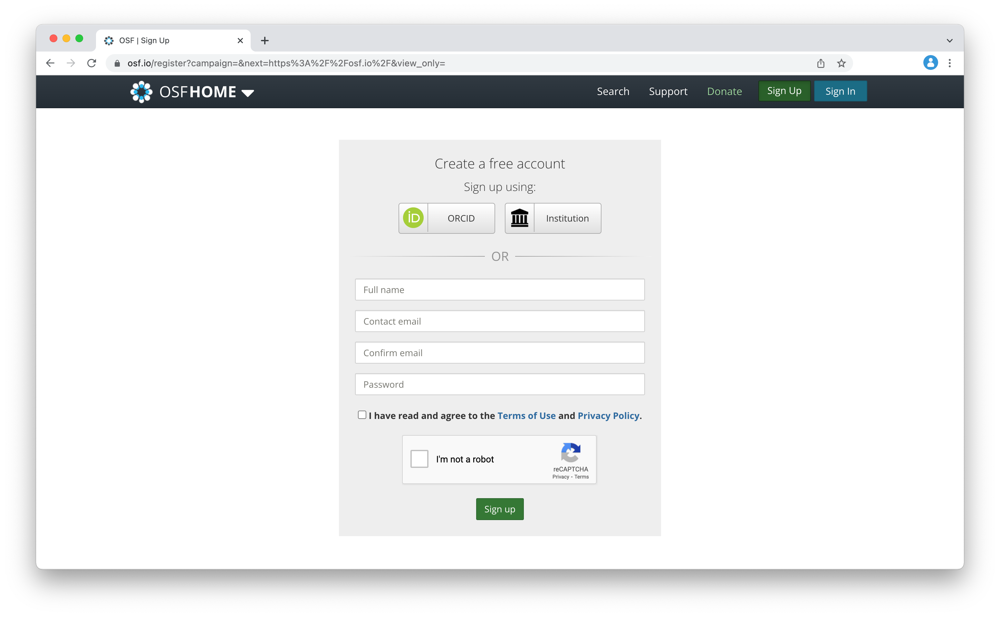
2.2.2 Create a Project
To create a new project:
From the user Dashboard, click the “Create new project” button. 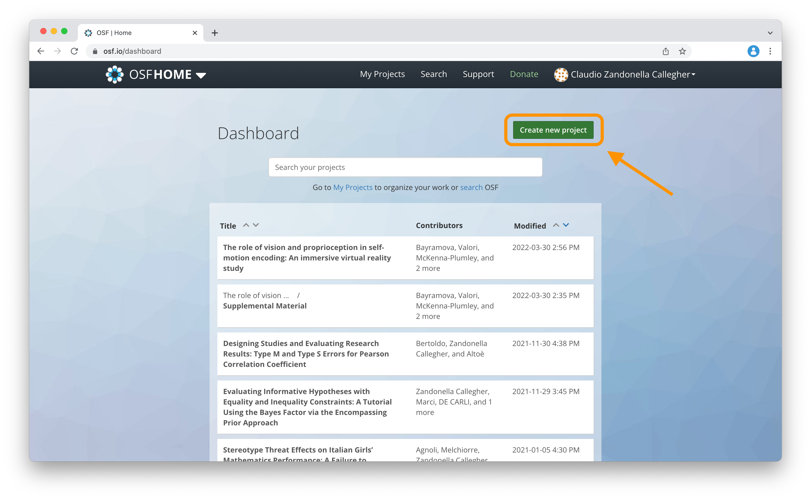
Specify the project title and store location. Next, press the “Create” button. Note that institutions may require that data be stored in the EU to comply with storage regulations. 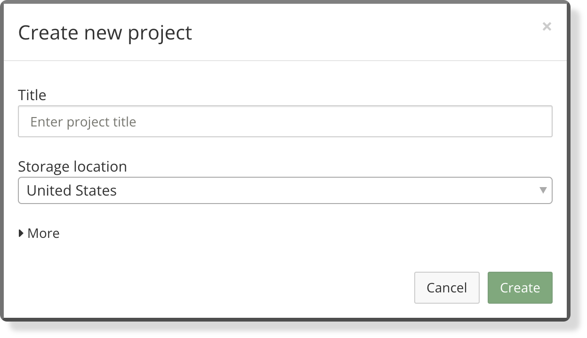
2.2.3 Project Homepage
The project homepage provides summary information about the project. In particular,
- Project title. The project title.
- Contributors. List of all contributors. See Section 2.3.2, to add new contributors to the project.
- Date created. Date of creation and last updated.
- Category. Specify the type of project.
- Description. Provide a brief description of the project
- License. Specify the project license. To know more about licenses, see Chapter 3.1.1.6.
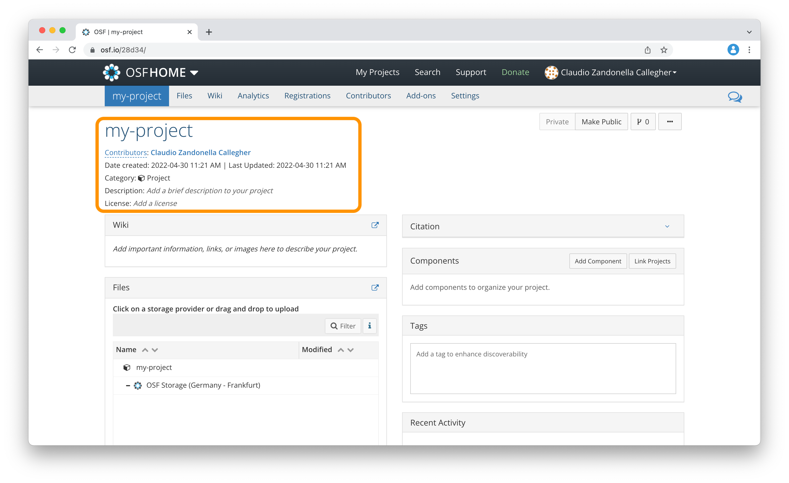
On the top right corner, we find further options about,
- Visibility. Check and modify the project visibility (public or private).
- Fork. Created copies of the project.
- Share or add a bookmark to the project.
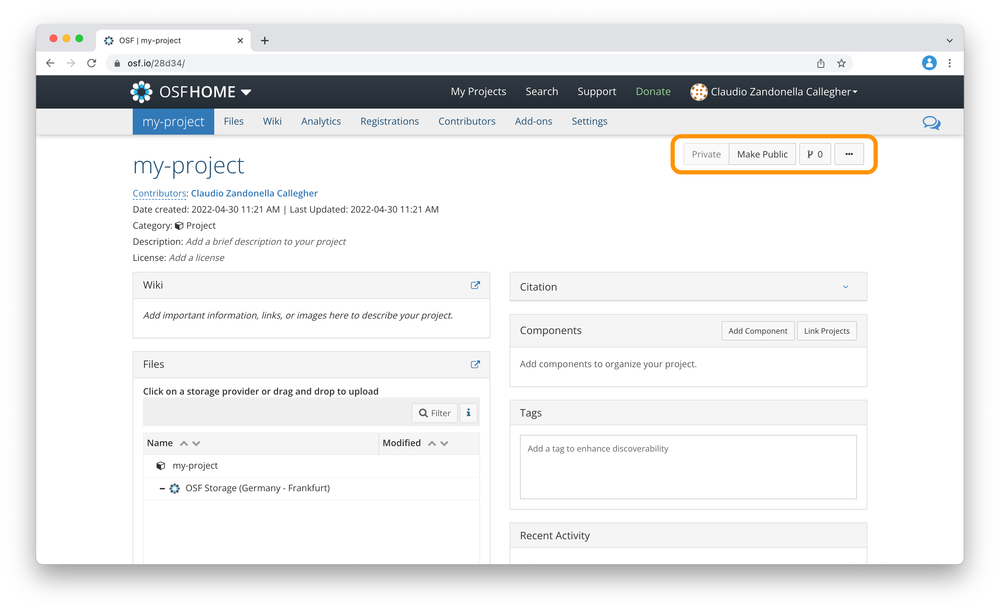
Moreover, multiple panels provide detailed information about the project. In particular,
- Wiki. Provide a detailed description of the project.
- Files. List all project files and materials.
- Citation. Specify how other colleagues should cite the project.
- Components. Add sub-projects to create a hierarchy structure.
- Tags. Add tags to the project to facilitate discoverability.
- Recent Activity. History of the project activity.
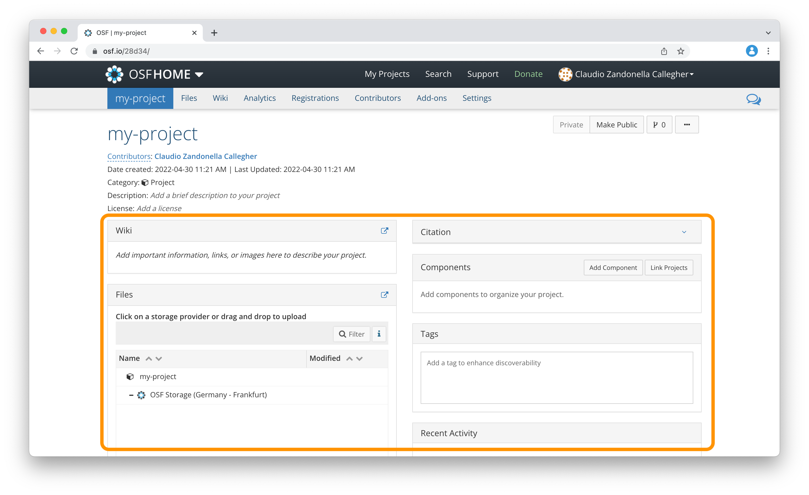
Finally, on the top of the project homepage, we find all the menu tabs to modify and manage our project.
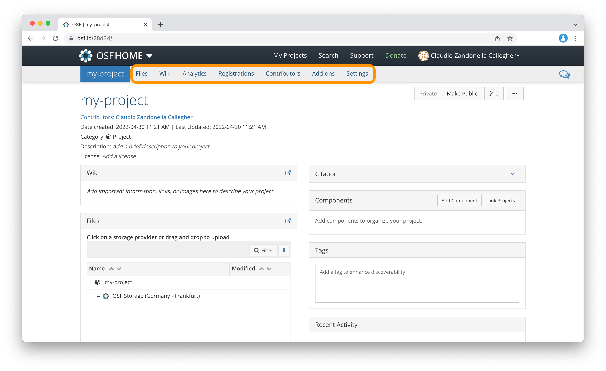
2.2.4 Adding Files
To add a file,
- From the “Files” tab, select the desired OSF Storage.
- Use the buttons at the top to create folders, upload/download files. 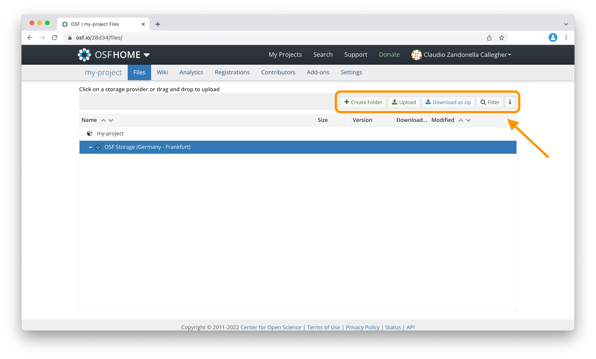
Note that we can add files also directly from the “Files” panel on the project homepage.
2.2.5 Documentation
To create a detailed description of the project,
- Open the “Wiki” tab from the top menu.
- Edit the wiki document. Note that Markdown syntax is supported (for an introduction to the Markdown syntax, consider the “Markdown Guide” available at https://www.markdownguide.org). 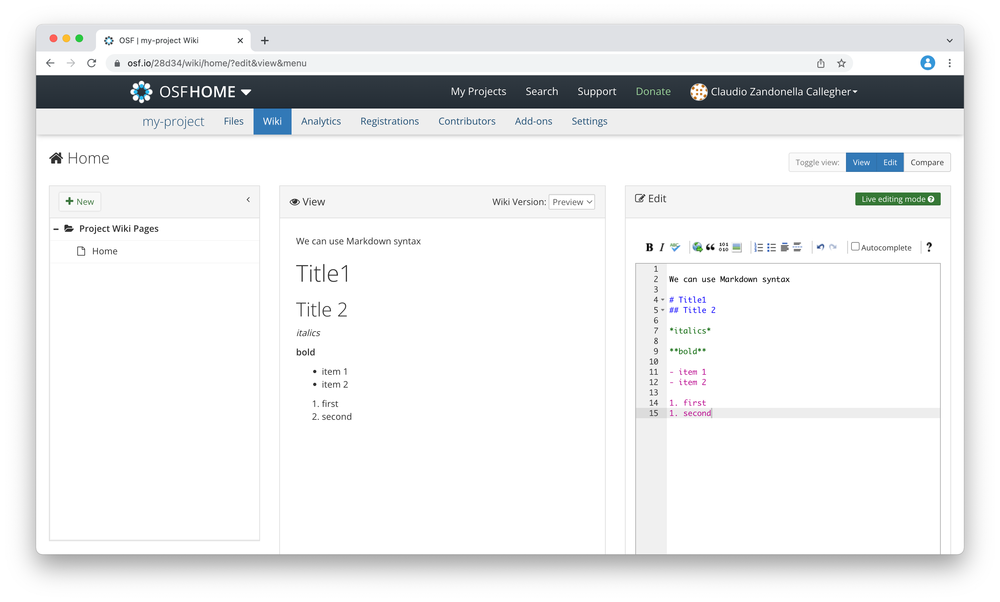
- Save the changes (button at the bottom) to update the project homepage.
2.3 Research Features
In this section, we describe further features useful to researchers.
2.3.1 DOI
To obtain a DOI for the project,
From the project homepage, change project visibility to public by pressing the “Make Public” button. 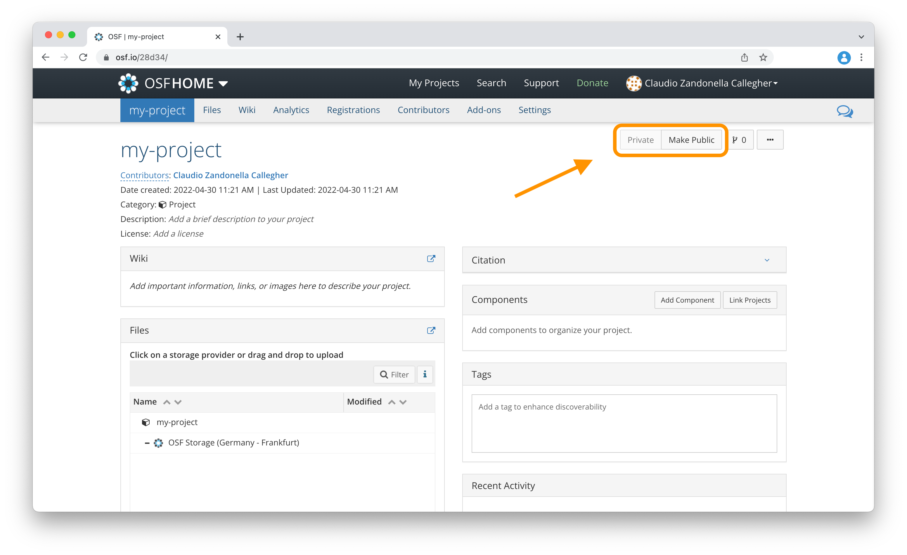
Now the option “Create DOI” will be available. 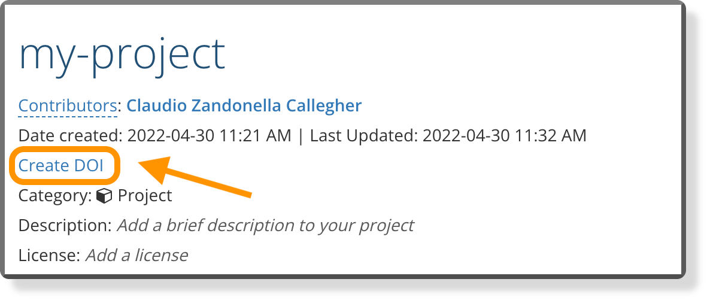
2.3.2 Contributors
To add new contributors to the project,
- Open the “Contributors” tab from the top menu.
- Click the “+ Add” button in the “Contributors” section. 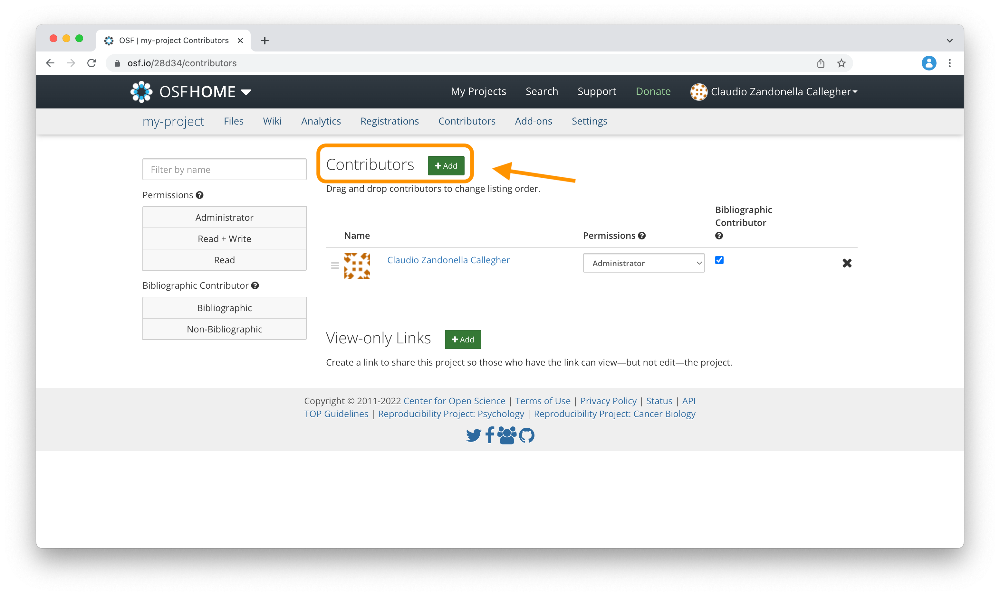
- Search users by name and add them as contributors.
2.3.4 Preprints
We can share preprints using the OSF Preprints service (https://osf.io/preprints/). The OSF Preprints is an aggregator of various preprint servers (e.g., PsyArXiv, and ArXiv).
To create a preprint, follow instructions at https://help.osf.io/article/376-preprints-home-page.
2.3.5 Add-ons and API
The OSF provides Add-ons and APIs that allow us to integrate third-party services. These include citation software (e.g., Zotero and Mendeley), storage services (e.g., Dropbox and Google Drive), Git repository-hosting services (e.g., GitHub and GitLab, see Chapter ??), and API services to access files and project info.
For all details about Add-ons and API, see https://help.osf.io/article/377-add-ons-api-home-page
The osfr R Package (Wolen & Hartgerink, 2020) provides a suite of functions for interacting R with the Open Science Framework. In particular, using the osfr R Package, we can:
- Access Open Research Materials. Explore publicly accessible projects and download the associated files and materials
- Manage Projects. Create projects, add components, and manage directories and files.
Package documentation with all details is available at https://docs.ropensci.org/osfr/.
The OSF
- Homepage
https://osf.io/ - Support
https://help.osf.io/ - Wiki
https://osf.io/4znzp/wiki/home/ - Preprints Service
https://osf.io/preprints/ - Preprint Guide
https://help.osf.io/article/376-preprints-home-page - Add-ons and API
https://help.osf.io/article/377-add-ons-api-home-page - osfr R Package
https://docs.ropensci.org/osfr/
Extra
- The Center for Open Science
https://www.cos.io - Markdown Guide
https://www.markdownguide.org